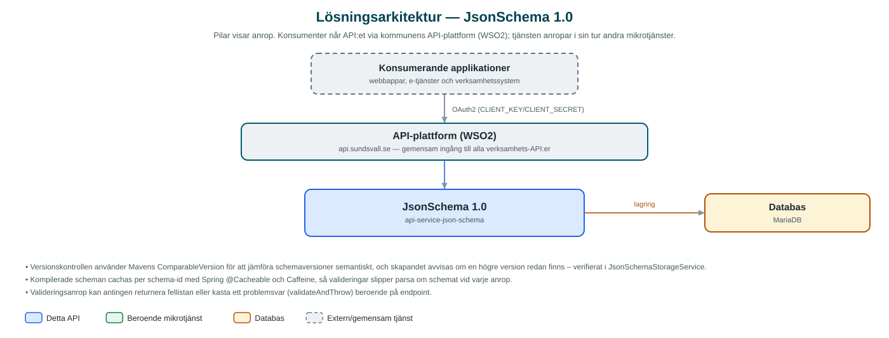

JsonSchema
Central lagring av versionshanterade JSON-scheman med validering av JSON-data mot schemana – för applikationer som behöver enhetliga datakontrakt.
Om API:et
JsonSchema är kommunens gemensamma register för JSON-scheman. Applikationer som utbyter strukturerad data lagrar sina datakontrakt här i stället för att varje system håller egna kopior, och kan sedan låta tjänsten validera inkommande JSON mot rätt schema och version.
Scheman lagras per kommun med namn och semantiskt versionsnummer. Nya versioner måste vara högre än den senaste befintliga – tjänsten jämför versionsnummer och avvisar försök att skapa en lägre eller redan befintlig version. Anropare kan hämta en specifik version eller alltid senaste versionen av ett schema via dess namn.
Till varje JSON-schema kan även ett UI-schema kopplas, som beskriver hur formulär för datastrukturen ska renderas i användargränssnitt. Valideringen bygger på networknt json-schema-validator och kompilerade scheman cachas i minnet för snabba upprepade valideringar.
Det här gör API:et
- Schemaregister – JSON-scheman lagras per kommun med namn och version och kan listas med paginering, hämtas per id eller som senaste version per namn.
- Versionskontroll – Nya schemaversioner måste vara högre än befintliga; dubbletter och nedgraderingar avvisas med konflikt.
- Validering av JSON – JSON-data valideras mot ett angivet schema; fel returneras som en lista eller kastas som problemsvar.
- UI-scheman – Ett UI-schema kan lagras per JSON-schema för att styra formulärrendering i klientapplikationer.
- Schemacache – Kompilerade scheman cachas i minnet (upp till 500 st i sju dagar) för snabba upprepade valideringar.
API-dokumentation
API:ets samtliga resurser, parametrar och datamodeller finns beskrivna i en OpenAPI-specifikation som är hämtad ur källkodsförrådet. Den kan utforskas interaktivt i Swagger UI eller laddas ner som YAML. Programvaruförteckningen (SBOM) listar tjänstens samtliga tredjepartskomponenter med version och licens.
Teknisk dokumentation
Nedan beskrivs hur tjänsten är uppbyggd, vilka andra tjänster den anropar och vad som krävs för att driftsätta den. Informationen är härledd ur källkoden och dess konfiguration på GitHub.
Arkitektur

API:et är en mikrotjänst (Java 25, Spring Boot via kommunens gemensamma tjänsteplattform dept44 (8.0.8), byggd med Maven). Konsumenter når tjänsten via kommunens gemensamma API-plattform (WSO2) på api.sundsvall.se – tjänsten anropas aldrig direkt. Lagring: MariaDB med Flyway-migrationer; JSON-scheman, UI-scheman och versionsinformation.
Teknikstack
- Språk: Java 25
- Ramverk: Spring Boot via kommunens gemensamma tjänsteplattform dept44 (8.0.8), byggd med Maven
- Databas: MariaDB med Flyway-migrationer; JSON-scheman, UI-scheman och versionsinformation
- Övrigt: networknt json-schema-validator 3.0.6 för validering, Caffeine-cache för kompilerade scheman, Mavens ComparableVersion för versionsjämförelser
Beroenden till andra mikrotjänster
Inga anrop till andra mikrotjänster hittades i källkodens konfiguration.
Programvaruförteckning
Tjänsten bygger på 239 tredjepartskomponenter fördelade på 13 olika licenser. Till skillnad från tabellen ovan, som listar andra mikrotjänster, avses här de programbibliotek som ingår i bygget. Se programvaruförteckningen för hela listan.
Konfiguration och driftsättning
- MariaDB-anslutning; databasschemat versionshanteras med Flyway
- Cacheinställningar för scheman: spring.cache.caffeine.spec (maximumSize=500, expireAfterWrite=7d)
- Ingen integration mot andra mikrotjänster – tjänsten är självförsörjande utöver databasen
- Anrop görs per kommun – municipalityId ingår i alla API-vägar
Noterbart ur källkoden
- Versionskontrollen använder Mavens ComparableVersion för att jämföra schemaversioner semantiskt, och skapandet avvisas om en högre version redan finns – verifierat i JsonSchemaStorageService.
- Kompilerade scheman cachas per schema-id med Spring @Cacheable och Caffeine, så valideringar slipper parsa om schemat vid varje anrop.
- Valideringsanrop kan antingen returnera fellistan eller kasta ett problemsvar (validateAndThrow) beroende på endpoint.
- Tjänsten anropar inga andra kommun-API:er – integrationslagret består enbart av databasåtkomst.
Källkod
Källkoden är öppen och finns hos Sundsvalls kommun på GitHub. I källkodsförrådet finns även instruktioner för att klona, konfigurera och starta tjänsten i egen miljö.